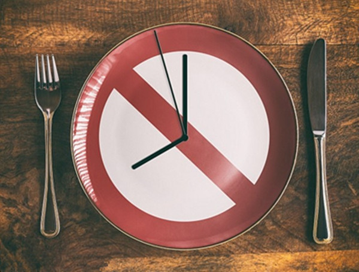
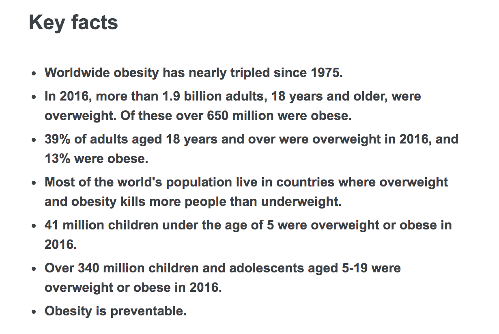

我之前在一年多的时间里，在很少运动的情况下，减掉了 50 多斤的体重（从 90 多公斤到目前稳定在 65 公斤内），同时内脏脂肪也降了下来（我的体脂称告诉我的），今年体检后各项指标也都正常，所以对本文谈到的东西也算有话语权。
本文不会给出任何具体的减肥方法，只是表达我的一些观点，不带有任何异端邪说请放心服用。
肥胖
肥胖是一种状态，是身体发炎的表现。肥胖是慢性病的主角，就像一股闷火在体内 24 小时不停的烧，烧着烧着就出了大问题。
以前人们提到心血管疾病都只是简单的归结为心血管阻塞，为什么阻塞，以前把罪嫁祸于胆固醇。
但是如果你的血管是健康的，它是没有理由被任何东西阻塞的，血管内壁是很光滑的组织，只有发炎的时候才会变得粗糙，才会粘附东西，不过粘附的也不一定是胆固醇。
胆固醇并没有罪，所以还是请大家多吃鸡蛋，不要害怕吃鸡蛋。
香烟在 2016 年被世界卫生组织认为是健康最大的杀手，但是 2016 年的下半年，世卫组织改口称肥胖才是人类最大的杀手，香烟已经退居到了第二位，所以最害怕的人其实是既肥胖又抽烟的人，这种绝对就是在自杀。
世界卫生组织关于肥胖的说明：

发炎时我们第一个想到的就是去吃消炎药，这是不对的。最好的方法是减肥，体重降了炎症也就降了，慢性病就会渐渐的消失。
结合上边的香烟有害健康，可以得出减肥、戒烟可以治百病。
减肥吃减肥药是件最愚蠢的事，如果尝试过吃药减肥的人，都会感到很痛苦，但凡减肥药，都会有一种叫做安非他命的成分，安非他命是一种中枢神经兴奋剂，吃完会心跳加快、没有食欲。也早就已经被证明是一种无效的手段。
热量 != 营养
你认为你吃了一顿很丰盛的饭，你觉得很营养吗？其实并不是，大部分都是吃了很多的热量，热量不等于营养。
每克蛋白质、脂肪、淀粉中的热量分别为4卡、9卡、4卡，这个叫做热量。维他命 C 是营养，可是它并没有热量。
拿我本人来说，自从瘦下来后对冷的敏感度就提高了，这也只是说明我的热量小了，不代表我营养不良，没什么大不了的，多穿几件衣服，睡觉的时候盖厚点就可以了。
肥胖的状态就是热量过剩，还可能伴随营养不良。脂肪是没有营养的，但是我们都知道它的热量也是最多的。
但是脂肪是个很好的东西，不要害怕它，减肥就是要燃烧脂肪。我们要做的是热量尽量少，营养尽量多。
现代人都知道病是吃出来的，吃出病来后又在想我要吃些什么才能把病治好？
答案并不是要吃什么，而是不吃什么。
每天一定要吃三餐吗？
人类吃三餐的历史并不长，其实现在还有很多地方保持一日两餐的习惯。
三餐是工业化后的产物，餐饮业越来越发达、便利店越来越多，让我们吃东西越来越方便，方便的后果就是吃东西吃过剩、吃太多。
来看一个英文单词：breakfast。
我们都知道它是早餐的意思，但是它是两个单词的组合，break 和 fast。
break 的意思是 打破、阻断、破坏。
fast 大多数人只知道它有快的意思，但实际上它是一个医学专有名词，叫做「禁食」。
breakfast 这个单词已经告诉我们了，早餐是破坏禁食状态，不吃才是对的，常态应该是不吃。但是很多人就会跳起来反驳我，不吃我会饿啊。别急，听我继续说。
现在的上班族，大多是 8 点多吃早餐，不到 12 点又要去吃午餐，甚至有的是 10 点吃早餐，12 点又要去吃，为什么？
这是因为我们认为吃饭的时间到了。大家都知道时间到了，就要去吃啊。
这种想法是不对的，正确的应该是饿了才去吃。
什么叫饿？饿是可以训练的，具体如何做不在本文的讨论范围内，不然又会到具体的方法上，又会被认为是异端邪说。
好了，今天就聊这些，本文的意图只是给大家提供一些新的视角来思考关于健康的问题。